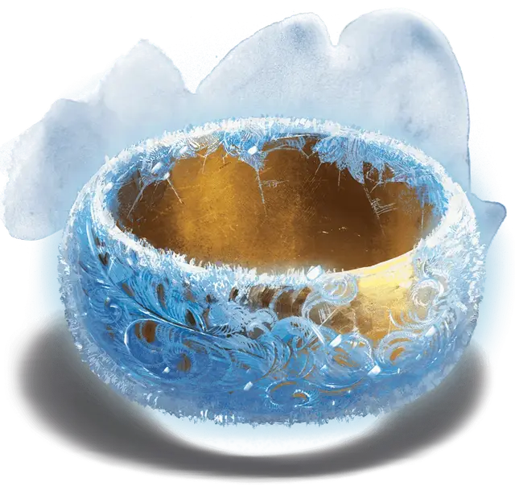

Кольцо зимы
Ring of Winter
Кольцо, артефакт (требуется настройка)

Артур Кимбер хранил эту вещь веками. Кольцо зимы — простое на вид золотое кольцо, которое подстраивает свои размеры так, чтобы плотно сидеть на пальце владельца. Внешняя сторона покрыта тонким слоем инея, который не тает от обычного тепла. Кольцо на ощупь холодное, и если его наденет тот, кто не настроен на кольцо, его рука тут же онемеет от холода.
Кольцо зимы разумно и пытается взять под контроль любое существо, которое его носит. Если это удаётся, кольцо заставляет носителя крушить все и всех вокруг в стремлении навлечь на себя гнев врагов и уничтожить носителя кольца.
Разум. Кольцо зимы — разумный хаотично-злой предмет с Интеллектом 14, Мудростью 14 и Харизмой 17. Кольцо общается передавая эмоции существу, носящему его, а так же обладает слухом и обычным зрением в радиусе 60 футов. Кольцо жаждет разрушения, и ему нравится причинять вред всему окружающему.
Необнаруживаемость. Кольцо зимы сопротивляется попыткам магического обнаружения. Ни кольцо, ни его носитель не могут являться целью школы магии Прорицания. Кроме того, они невидимы для магических средств слежения.
Заморозка времени. Пока вы носите это кольцо, вы не стареете естественным образом. При снятии кольца вы не состаритесь на «замороженные» годы. Кольцо не защищает носителя от изменения возраста, вызванного магическими эффектами, такими как «Ужасный облик» привидения [ghost].
Иммунитет к холоду. Пока вы носите это кольцо и настроены на него, вы имеете иммунитет к урону холодом и не страдаете от негативных последствий низких температур.
Магия. У кольца зимы есть 12 зарядов, и оно восстанавливает их все на рассвете. Пока вы носите кольцо, можете потратить необходимое количество зарядов, чтобы использовать следующие свойства:
- Вы можете действием потратить 1 заряд кольца, чтобы понизить температуру в сфере с радиусом 120 футов с центром в точке, которую вы можете видеть в пределах 300 футов от вас. Температура в области падает на 20 градусов по Фаренгейту в минуту до минимума в -30°F (-34°С). Когда температура опускается ниже 32°F (0°C), на поверхности начинают появляться лёд и иней. Эффект является постоянным, если только вы не окончите его действием, после чего температура постепенно приходит в норму со скоростью 10 градусов в минуту.
- Вы можете использовать одно из следующих заклинаний кольца (Сл спасброска 17), потратив указанное количество зарядов: длань Бигби [Bigby’s hand] (2 заряда; рука состоит из льда, имеет иммунитет к урону холодом и наносит сжатым кулаком дробящий урон (вместо урона силовым полем), конус холода [cone of cold] (2 заряда), обледенение (3 заряда; как окаменение [flesh to stone], за исключением того, что цель превращается в лёд с прочностью и долговечностью камня), град [ice storm] (2 заряда), Отилюков ледяной шар [Otiluke’s freezing sphere] (3 заряда), метель [sleet storm] (1 заряд), шипы [spike growth] (1 заряд; шипы состоят изо льда) или ледяная стена [wall of ice] (2 заряда).
- Вы можете потратить соответствующее количество зарядов кольца, чтобы действием создать неодушевлённый ледяной объект (2 заряда) или живое ледяное существо (4 заряда). У ледяного объекта не должно быть подвижных частей, и он должен помещаться в куб со стороной в 10 футов. Он имеет плотность и долговечность металла или камня (по вашему выбору). Ледяное существо аналогично Зверю с ПО не выше 2. Ледяное существо обладает той же статистикой, что и выбранный Зверь, но со следующими изменениями: существо — это конструкт с уязвимостью к урону огнём, иммунитетом к урону холодом и ядом, и иммунитетом к следующим состояниям: очарование, истощение, испуг, паралич, окаменение, отравление. Ледяное существо слушается только команды своего создателя. Ледяной объект или существо появляется в свободном пространстве в пределах 60 футов от вас. Оно истаивает в лужу обычной воды через 24 часа, либо при опускании хитов до 0. При высокой температуре оно теряет по 5 (1к10) хитов в минуту из-за таяния. При необходимости рассчитать количество хитов существа обратитесь к рекомендациям в главе 8 «Руководства Мастера».
Прочие свойства. По слухам, кольцо зимы обладает другими свойствами, которыми могут воспользоваться только злые существа, чья воля не порабощена кольцом. Морозные великаны издавна верят, что с помощью кольца можно замораживать целые миры, в то время как джинн [djinni] на службе у Калишитского паши как-то сказал, что кольцо позволяет призывать белых драконов и могучую морозную первородную сущность по имени Крионакс и управлять ими.
Уничтожение кольца. Кольцо практически неуничтожимо и сопротивляется даже самому горячему магическому огню. Если его наденет архифея, известная как Королева Лета, кольцо растает и навсегда исчезнет.